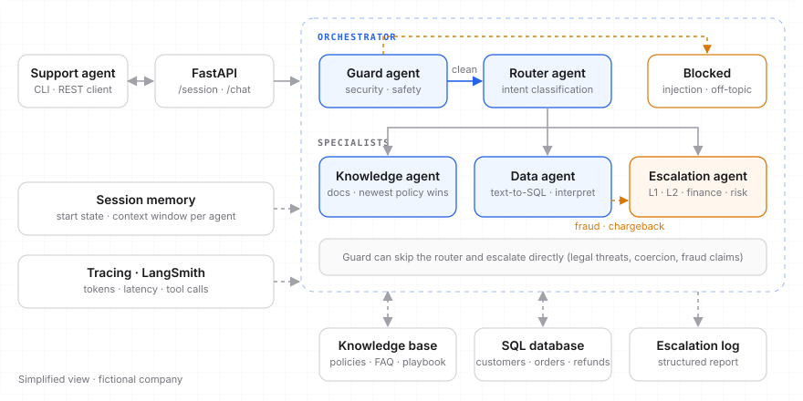

OrbitShop Assist
Assistente conversacional interno para o time de suporte e operações de uma empresa de software para lojas online. Ele responde com base na documentação interna, consulta clientes, pedidos e reembolsos no banco, e escala para um humano quando a situação pede. An internal conversational assistant for the support and operations team of an e-commerce software company. It answers from internal documentation, looks up customers, orders and refunds in the database, and escalates to a human when the situation calls for it.
O desafioThe challenge
Construir, com abordagem livre, uma solução mínima funcional de IA conversacional para uso interno. O material entregue tinha algumas armadilhas de propósito: Build, with a free choice of approach, a minimal working conversational AI for internal use. The material provided had a few deliberate traps:
Documentos desatualizadosOutdated documents
Duas versões da política de reembolso, uma antiga e uma vigente, com regras diferentes.Two versions of the refund policy, an old one and a current one, with different rules.
Dados + regrasData + rules
Consultar um pedido não basta: a resposta precisa respeitar as regras de negócio dos documentos.Looking up an order isn't enough: the answer has to respect the business rules in the documents.
Casos sensíveisSensitive cases
Fraude, chargeback e ameaças judiciais não devem ser resolvidos pelo bot, e sim escalados.Fraud, chargebacks and legal threats shouldn't be handled by the bot; they must be escalated.
Arquitetura multiagenteMulti-agent architecture
Um orquestrador passa cada mensagem por um agente de segurança, depois por um roteador que escolhe o especialista certo. Cada agente tem prompt, modelo e janela de contexto próprios, configuráveis sem mexer no código. An orchestrator runs each message through a security agent, then a router that picks the right specialist. Each agent has its own prompt, model and context window, configurable without touching the code.

- Guard agentPrimeiro filtro: bloqueia prompt injection e assuntos fora do escopo. Ameaças judiciais, coerção e alegações de fraude pulam o roteador e vão direto para o escalonamento.First filter: blocks prompt injection and off-topic requests. Legal threats, coercion and fraud claims skip the router and go straight to escalation.
- Router agentClassifica a intenção em conhecimento, dados ou escalonamento, usando o histórico recente da conversa.Classifies the intent as knowledge, data or escalation, using recent conversation history.
- Knowledge agentResponde com base nos documentos internos e cita as fontes. Quando dois documentos conflitam, usa o vigente e avisa qual foi descartado.Answers from internal documents and cites its sources. When two documents conflict, it uses the current one and says which was discarded.
- Data agentText-to-SQL em dois passos: gera a consulta, executa no banco e interpreta o resultado à luz das regras de negócio, com a data de hoje injetada para calcular prazos.Two-step text-to-SQL: generates the query, runs it and interprets the result against the business rules, with today's date injected to compute deadlines.
- Escalation agentAvalia o caso pelo playbook e gera um relatório estruturado com nível, motivo, evidência e próximos passos.Assesses the case against the playbook and produces a structured report with level, reason, evidence and next steps.
Escalonamento silenciosoSilent escalation
Quando um caso precisa de um humano, quem está no chat recebe uma mensagem neutra, sem detalhes internos. O relatório completo vai para uma tabela de auditoria que o time de operações consulta. When a case needs a human, the person in the chat gets a neutral message with no internal details. The full report goes to an audit table that the operations team reviews.
NíveisLevels
L1, L2, Financeiro ou Risco, conforme o playbook interno.L1, L2, Finance or Risk, following the internal playbook.
RastreabilidadeTraceability
Cada registro guarda sessão, atendente, pedido, evidência e qual agente disparou o escalonamento.Each record stores the session, agent, order, evidence and which agent triggered the escalation.
FallbacksFallbacks
Se o modelo sair do formato esperado, regras de segurança garantem que fraude e chargeback nunca passem em silêncio.If the model drifts from the expected format, safety rules make sure fraud and chargebacks never slip through.
PrioridadePriority
Clientes do plano Enterprise recebem destaque de prioridade alta nas respostas.Enterprise-plan customers are flagged as high priority in the answers.
API e observabilidadeAPI & observability
Tudo é exposto em FastAPI e roda com um único comando em Docker. A sessão começa com o contexto do atendente, que é injetado nos prompts de todos os agentes. Everything is exposed through FastAPI and runs with a single Docker command. A session starts with the support agent's context, which is injected into every agent's prompt.
| Endpoint | O que fazWhat it does |
|---|---|
| POST /session/start | Abre a sessão com nome e e-mail do atendente (auditoria)Opens a session with the agent's name and email (audit) |
| POST /chat | Envia a mensagem e recebe a resposta do agente escolhidoSends a message and gets the chosen agent's reply |
| GET /session/{id}/history | Histórico da conversa com o rastro de cada ferramenta chamadaConversation history with a trace of every tool call |
| DELETE /session/{id} | Encerra e limpa a sessãoEnds and clears the session |
| GET /health | Health checkHealth check |
Tracing
LangSmith mostra prompt, tokens, latência e cada ferramenta usada em cada turno.LangSmith shows the prompt, tokens, latency and every tool used in each turn.
Janela de contextoContext window
Cada agente recebe só os últimos N turnos; o guard é stateless de propósito.Each agent gets only the last N turns; the guard is stateless on purpose.
Rate limit
Erros de limite do provedor viram uma mensagem amigável, nunca um erro 500.Provider rate-limit errors become a friendly message, never a 500 error.
Decisões e trade-offsDecisions & trade-offs
Multi-provider por agentePer-agent multi-provider
Modelos pequenos e rápidos no guard e no router; modelos maiores onde há raciocínio. Trocar o provedor é só mudar uma variável de ambiente.Small, fast models for the guard and router; larger ones where reasoning matters. Switching provider is just an environment variable.
Chains diretasDirect chains
Fluxos explícitos em vez de agentes genéricos de tool-calling: mais previsível, mais fácil de testar e sem quebrar entre versões do LangChain.Explicit flows instead of generic tool-calling agents: more predictable, easier to test and stable across LangChain versions.
Banco simples, troca fácilSimple DB, easy swap
SQLite local para zero infraestrutura; o código não depende do banco, então ir para Postgres é trocar a connection string.Local SQLite for zero infrastructure; the code is database-agnostic, so moving to Postgres is a connection-string change.
Limitações assumidasKnown limitations
Sessões em memória e sem autenticação, documentadas como próximos passos (Redis e auth).In-memory sessions and no auth, documented as next steps (Redis and auth).